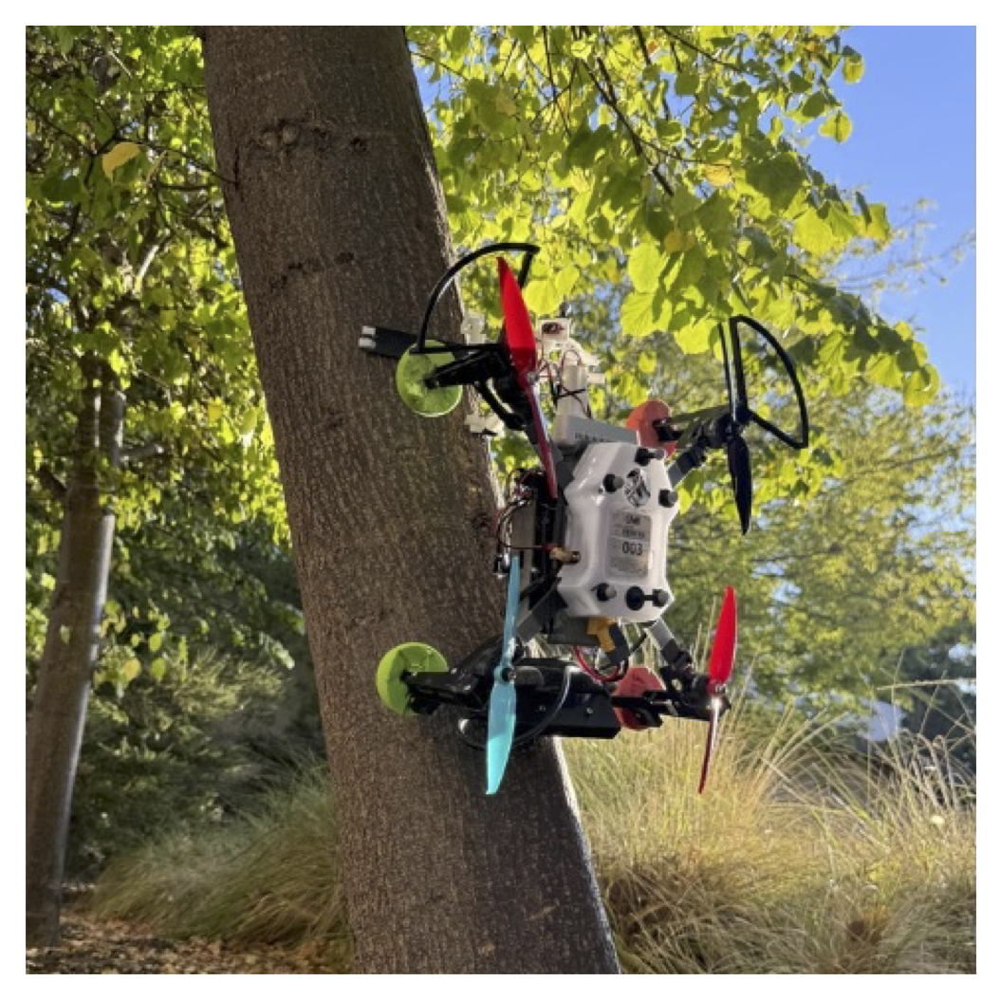
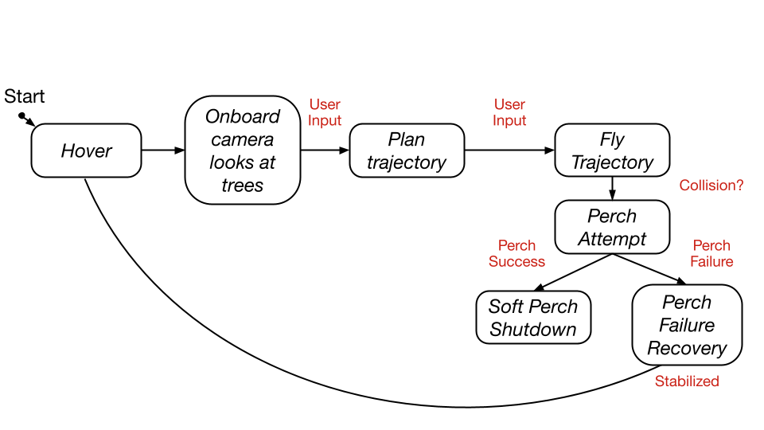
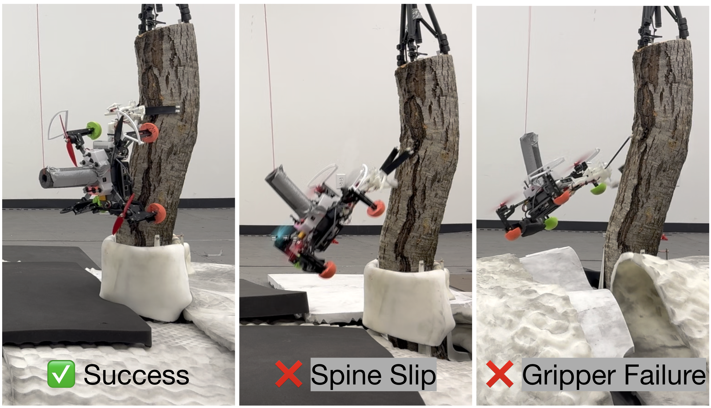

SLAP: Slapband-based Autonomous Perching Drone
with Failure Recovery for Vertical Tree Trunks
📄 This paper was accepted to IEEE Aerospace Conference 2026

Abstract
Perching allows unmanned aerial vehicles (UAVs) to reduce energy
consumption, remain anchored for surface sampling operations,
or stably survey their surroundings. Previous efforts for perching
on vertical surfaces have predominantly focused on lightweight
mechanical design solutions with relatively scant system-level
integration. Furthermore, perching strategies for vertical surfaces
commonly require high-speed, aggressive landing operations that are
dangerous for a surveyor drone with sensitive electronics onboard.
This work presents the preliminary investigation of a perching
approach suitable for larger drones that both gently perches on
vertical tree trunks and reacts and recovers from perch failures.
The system in this work, called SLAP, consists of a vision-based
perch site detector, an IMU-based perch failure detector, an
attitude controller for soft perching, an optical close-range
detection system, and a fast active elastic gripper with microspines
made from commercially-available slapbands.
We validated this approach on a modified 1.2 kg commercial quadrotor.
Indoor flight experiments achieved a 75% perch success rate across
20 trials, and 100% perch failure recovery across induced failures.
Video Demo
System Overview
The SLAP system consists of five main components that work together to enable autonomous perching on vertical tree trunks:
- Vision-based Perch Site Detector: Uses an Intel Realsense D435 RGBD camera with a deep-learned model based on PercepTree to detect suitable tree sections and select optimal perch sites based on tree diameter, bark texture, and contour.
- IMU-based Perch Failure Detector: Monitors drone attitude using accelerometer data to detect the onset of slipping within 100ms, enabling rapid recovery maneuvers.
- Attitude Controller for Soft Perching: Implements a gentle perch controller that decreases thrust from hover to zero over 4 seconds at 100Hz to minimize stress on the gripper and prevent microspine slippage.
- Optical Close-range Detection System: Uses a time-of-flight sensor (VL53L1X) to measure distance to the tree and electronically trigger the gripper when the threshold distance is reached.
- Fast Active Elastic Gripper: Features bistable tape springs modified from commercially available slap bands that snap around the tree trunk. Microspines at the tips of the slapbands penetrate the bark for secure attachment.

Hardware
The SLAP system is built on a modified Uvify IFO-S quadrotor platform with the following key hardware components:
Base Platform
- Quadrotor: Modified Uvify IFO-S (1kg stock, 1.2kg with perching hardware)
- Onboard Computer: NVIDIA Jetson Nano for low-level control and PX4 autopilot interface
- Off-board Computer: NVIDIA Orin for high-level processing (indoor flights)
- Safety Features: 3D-printed PLA bumper with foam pool noodle cushioning, foam balls on legs for soft landings
Active Gripper Design and Avionics
- Gripper Weight: 125g (3D-printed on Formlabs Form 3+ with Rigid 4k resin)
- Grasp Mechanism: Two bistable tape springs (BRANDWINLITE BW-SB05-BK) that snap closed in 6ms
- Microspines: Four organ needles per band with epoxy-filled eyelets, glued in 3D-printed tiles
- Trigger System: MKS HS75K servo pulling friction latch via high-strength fishing line tendons
- Compliance System: Rubber bands for yaw compliance, cylindrical tubes with linear spring for suspension
- Pitch-down Pivot: Spring-loaded pivot allowing up to 120° pitch after successful grasp
Sensing and Perception
- RGBD Camera: Intel Realsense D435 (0.3-3m range) for tree detection and depth sensing
- Distance Sensor: VL53L1X time-of-flight sensor for precise gripper triggering
- IMU: For perch failure detection and attitude control

Results
The SLAP system was validated through comprehensive indoor flight experiments at the Boeing Flight & Autonomy Laboratory at Stanford University:
Perching Success Rate
- Overall Success Rate: 75% across 20 human-in-the-loop autonomous flight trials
- Success Definition: Tree detection, trajectory generation, site reach, gripper trigger, and maintained attachment for ≥10 seconds
- Failure Analysis: 5 failed trials total:
- 2 failures: Microspines slipping after successful perch (before 10s mark)
- 2 failures: Slap bands slipping from holders (insufficient glue during prototyping)
- 1 failure: Catastrophic gripper plastic failure
Failure Recovery Performance
- Recovery Success Rate: 100% (2/2 trials)
- Detection Speed: IMU-based failure detection identified slipping onset within 100ms
- Recovery Method: Drone stabilized at 1m offset from tree after failure detection
- Test Method: Controlled failures induced by filing down microspines to reduce engagement

Citation
@misc{dihoffmann2026slap,
title={SLAP: Slapband-based Autonomous Perching Drone with Failure Recovery for Vertical Tree Trunks},
author={Di, Julia and Hoffmann, Kenneth A. W. and Chen, Tony G. and Ren, Tian-Ao and Cutkosky, Mark},
year={2026},
eprint={2601.00238},
archivePrefix={arXiv},
primaryClass={cs.RO},
url={https://arxiv.org/abs/2601.00238}
}
Acknowledgements
The authors thank James Biddle and the University Tree Program for permission to use a segment of a real tree for indoor flight testing. The authors also thank Jun En Low for his instructions on drone piloting and Joshua Dong for his work in early prototyping of the gripper design. This work was supported by EpiSys Science Inc. and subcontracted to Stanford's Center for Design Research. J. Di was additionally supported by a P.E.O. Scholarship and the Zonta International Amelia Earhart Scholarship at the time of work. In addition, J. Di, K. A. W. Hoffmann, and T. G. Chen were with the Department of Mechanical Engineering at Stanford University at the time of work.